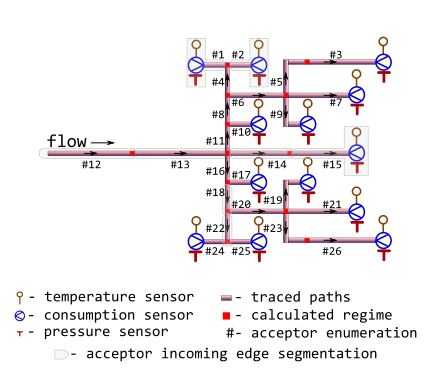

Data describes a virtual test bench of branched district heating network by exposing parameters associated with Minenergo Order 325. They treat data as a snapshot of network state and use it primarily for static thermal-hydraulic computations and topology effects.
m325testbench
A data frame with 22 rows (number of nodes and incoming edges) and 15 variables:
An identifier of node which heat carrier flows out.
Type: any type that can be painlessly coerced to character
by as.character.
An identifier of node which heat carrier flows in. According to topology
of test bench considered this identifier should be unique for every row.
Type: any type that can be painlessly coerced to
character by as.character.
Snapshot of thermal-hydraulic regime state: temperature of heat carrier
(water) sensor-measured on terminal acceptor node, [°C].
Type: [double]. NAs are introduced for nodes without
temperature sensor.
Snapshot of thermal-hydraulic regime state:
sensor-measured
absolute pressure
of heat carrier (water) inside the pipe (i.e. acceptor's incoming edge),
[MPa].
Type: [double]. NAs are introduced for nodes without
pressure sensor.
Snapshot of thermal-hydraulic regime state:
sensor-measured amount of heat carrier (water) on terminal node that is
transferred by pipe (i.e. acceptor's incoming edge) during a period,
[ton/hour]. Type: [double]. NAs are introduced for
nodes without consumption sensor.
internal diameter of pipe (i.e.diameter of acceptor's incoming edge),
[m].
Type: [double].
pipe length (i.e. length of acceptor's incoming edge), [m].
Type: [double].
year when the pipe (i.e. acceptor's incoming edge) is put in operation after
laying or total overhaul.
Type: [integerish]
identifier of insulation that covers the exterior of pipe (i.e. acceptor's incoming edge):
0no insulation
1foamed polyurethane or analogue
2polymer concrete
[integerish, subset].type of pipe laying depicting the position of pipe in space. Only five types of pipe laying are considered:
air,
channel,
room,
tunnel,
underground.
[character, subset].logical indicator: should they consider additional heat losses of fittings
located on this pipe (i.e. acceptor's incoming edge)?
Type: [logical].
logical indicator for regime of pipe (i.e. acceptor's incoming edge): if
TRUE pipe is operated more that 5000 hours per year.
Type: [logical].
roughness of internal wall of pipe (i.e. acceptor's incoming edge),
[m].
Type: [double].
elevation of pipe inlet, [m].
Type: [double].
elevation of pipe outlet, [m].
Type: [double].
The test bench has the next configuration:

As it may be seen from the figure there is a particularity in topology of
the provided directed graph: each node has only single ancestor. Hence one
of isomorphic representation of such directed graph is a
data.frame in which each row describes a node along with its
incoming edge and each column contains an attribute value for that node or
an attribute value for its incoming edge.
Since they deal with incoming edges and hence nodes are all flow acceptors the natural enumeration of nodes is by acceptor id.
Note that to leverage igraph functionality for plotting there is a zero sender of flow.
Other Minenergo:
m278hlair(),
m278hlcha(),
m278hlund(),
m278insdata,
m278inshcm(),
m278soildata,
m325beta(),
m325dropt(),
m325nhldata,
m325nhl()
if (FALSE) { # Do not hesitate to use data.table for larger chunks of network: library(data.table) setDT(m325testbench) # Check for declared topology isomorphism: stopifnot( all(!duplicated(m325testbench$acceptor)) ) # Do all terminal nodes have sensor-measured regime parameters?: terminal_nodes <- m325testbench[!(acceptor %in% sender)] stopifnot( all(!is.na(terminal_nodes[, .(temperature, pressure, consumption)])) ) # Welcome to use igraph for topology investigations: library(igraph) g <- graph_from_data_frame( # provide edge list with edge attributes: d = m325testbench[, .SD, .SDcols = !c("temperature", "pressure", "consumption", "inlet", "outlet") ], # provide node attributes: v = rbind( # attributes for zero sender list( acceptor = 0, elevation = NA_real_, temperature = NA_real_, pressure = NA_real_, consumption= NA_real_ ), m325testbench[, .( # Since every row describes node with its incoming edge: acceptor, elevation = outlet, # sensor readings (if any): temperature, pressure, consumption ) ] ) ) plot(g, layout = layout_as_tree(g, root = 1)) }